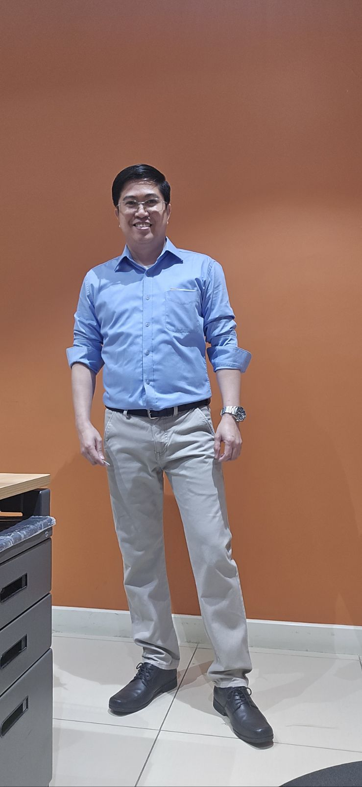

MES (Manufacturing Execution System)
Built and integrated MES workflows with SAP, POS, and related systems to provide real-time production visibility and synchronized operational data.

I am an Application Development Manager who transforms enterprise software delivery by applying Lean Manufacturing discipline to the full Software Development Life Cycle. With 20+ years bridging plant floors and production codebases at Uratex Philippines, I lead a 20-person multidisciplinary team that treats every sprint as a production line — where waste is measured, quality is engineered in, and value is delivered continuously. My unique edge: I understand how every line of code impacts the Manufacturing Operation.
Most managers choose one lane. I built my career at the intersection of three — because real digital transformation demands fluency across all of them.
Deep hands-on expertise spanning SAP core systems, high-performance Go/PHP backends, mobile (Android & iOS) environments, and modern AI-driven applications. I architect scalable, containerized solutions backed by robust CI/CD automation.
I translate business objectives into executable engineering roadmaps. My teams operate under Agile/Scrum aligned with ISO/IEC 25010 quality standards and IEEE 1028 review processes.
Certified in Lean Manufacturing, Pollution Control, and Labor Law compliance. Grounded in the 7 Habits of Highly Effective People, I bring a highly proactive, factory-floor mindset to every deployment pipeline and QA gate.
I manage the full application lifecycle for one of the Philippines' largest manufacturing enterprises — from business requirements through deployment and 24/7 operations support.
I apply the same principles that eliminate waste on a production floor to eliminate "digital waste" across the SDLC — because inefficient code is as costly as an idle machine.
In Lean Manufacturing, we target DOWNTIME — Defects, Overproduction, Waiting, Non-utilized talent, Transportation, Inventory, Motion, and Extra-processing. I map these directly to software delivery: defects are bugs escaping to production, overproduction means building features nobody requested, waiting is developers blocked on approvals or slow builds, non-utilized talent is skilled engineers bogged down by repetitive manual tasks, transportation is excessive hand-offs between siloed teams, inventory is unmerged branches and stale PRs, motion is context-switching and searching for undocumented specs, and extra-processing is over-complex architecture or redundant testing. Every sprint retrospective is a Kaizen event to systematically eliminate these wastes.
I use Value Stream Mapping (VSM) to visualize and optimize the flow from a business requirement to a deployed, production-ready feature. The goal: reduce lead time, eliminate handoff friction, and ensure every activity adds measurable value.
"The most dangerous kind of waste is the waste we do not recognize." — Shigeo Shingo, Co-architect of the Toyota Production System
| Manufacturing Concept | Application in IT Management |
|---|---|
| 🏭 Lean Manufacturing | Eliminating "waste" in the Sprint Backlog — no gold-plating, no zombie tickets, no context-switching overhead. |
| 📈 Demand Forecasting | Resource allocation and capacity planning for the Dev team. Predicting sprint velocity using historical throughput data. |
| ♻️ Pollution Control (PCO) | "Code Hygiene" and Technical Debt management. Treating code smells like environmental pollutants — measure, report, remediate. |
| ⚙️ Plant Management | Managing high-availability systems (SAP integrated) for 24/7 operations. Uptime is not optional when the factory never sleeps. |
| 📋 Quality Control (QC) | Automated test suites as "inspection stations." Every build passes through gates per ISO/IEC 25010 quality attributes. |
| 🚨 Poka-Yoke (Mistake-Proofing) | Integrating CI/CD with Git Hooks as quality gates. Pre-commit hooks and automated deployment pipelines mistake-proof the "software factory" by catching defects before they reach production. |
A leader's stack includes methodologies, governance frameworks, and organizational tools — not just programming languages.
A focused view of major systems I have led, from platform architecture to enterprise integration. Each card links to a dedicated project page with scope, stack, and outcomes.
Built and integrated MES workflows with SAP, POS, and related systems to provide real-time production visibility and synchronized operational data.
Developed a centralized project management platform for planning, execution, issue tracking, and cross-team transparency across delivery streams.
Led digitization initiatives that converted manual workflows into measurable digital processes, improving cycle times, traceability, and reporting quality.
Designed and delivered SAP API services to enable secure and scalable system-to-system integration for enterprise applications and partner tools.
Delivered an order management platform fully integrated with SAP, MES, and Fleet Management System to connect order flow from planning through fulfillment.
Built an automated trading bot platform connected to multiple crypto exchanges with unified strategy execution and risk controls.
I exist at the rare intersection where manufacturing discipline meets software innovation. At Uratex Philippines, I have spent over a decade proving that the principles which optimize a production line — eliminate waste, engineer quality in, respect every person, and pursue perfection — are the same principles that build world-class software teams. My mission is to lead engineering organizations that deliver measurable business value with the precision of a factory and the agility of a startup.